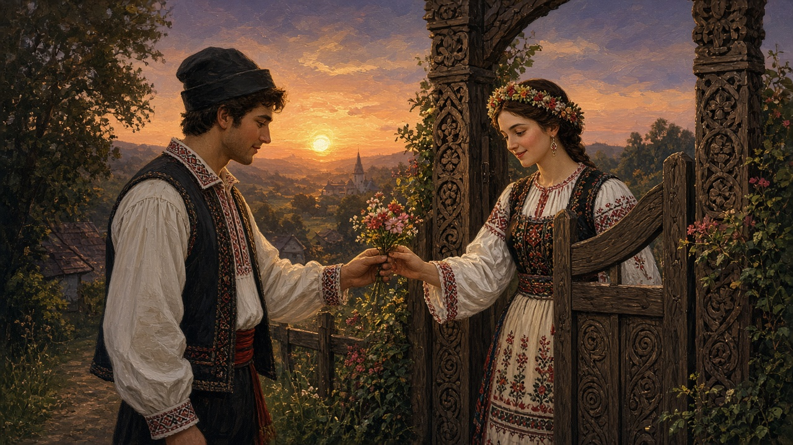

Courtship and dor
In the village, love was not a card. It was dor — the ache for someone not here — a song that took its time, talk at the poartă, and whether you were asked to sit at the table. This page is that older talk. Not a dating guide, and not a script for every county.

How it was said
Dor is the word that does the heavy work. Not quite homesick, not quite missing. You can have dor for a person, a house, a road. Dragoste is the heavier love-word; te iubesc is the sentence people actually say. Songs carried more of this than speeches. The doină is the slow one: free time, ornament until the line almost stops, longing for someone who left, the army, the road. That song, and why it is not a dance, live on music. A hora on a Sunday was where the yard saw who walked with whom. The song names the feeling. The circle is where people were visible.
The poartă is the first room of courtship. Evening talk over the gate — someone standing in the road, someone on the house side of the boards, a parent not far — is the picture a lot of houses still tell. You were not yet inside. The carved gate of Maramureș is a monument; most yards had a plainer latch. Either way the threshold was the point. The house behind it, and the bench under the eaves, sit on the house. The northern oak version is on gates.
The table is the second room. Being asked in, a glass, bread, sitting with the parents: that meant the visit had become family business. La masă is not a date. It is the household admitting the thing is being talked about. The guest glasses other pages already named — wine, țuică — belong to that welcome, not to a private toast.
Visiting, gifts, a blessing
Young people met where work and the calendar put them: a Sunday hora, a șezătoare — an evening of spinning and talk in a room that was not a dance hall — a feast, a well path, the road after church. Villages keep different pieces of this; this page does not flatten them into one national script. What is shared is that courtship was watched. Neighbors knew. The fence was low. How a sat sees a yard is on villages.
Gifts were small and named. A Mărțișor on March 1 is a thread you pin whether you are walking with anyone or not; it can also be given. A handkerchief, a flower, a length of cloth. The pile of embroidery — the ia, the ștergar, the cover — was once expected before marriage. That pressure is gone in most towns. The stitch is not. That work sits on crafts. This is not a catalog of presents. It is the habit of putting something made or pinned into a palm.
When the families admit the thing is real, there is still an asking. Cererea — a visit to the girl’s house, pețit in older talk — is how the two yards say it out loud. The wedding page already starts there. What the older house wanted, and often still wants, is binecuvântarea părinților: the parents’ blessing. Not a form. A sentence in the room, sometimes with a loaf, sometimes with an icon. Without it the nuntă felt unfinished even if the primărie had the signatures. Practice varies. This page does not invent a rite.
Days that still name pairing
Dragobete is the late-winter walk: February 24, birds, a path out of the yard. Towns print hearts on it now. The older sense is thinner — pairing, not a dinner reservation. Mărțișor a few days later is the red-and-white pin, the mark that March has started. June has Sânziene: yellow flower crowns, a wreath, talk about who you might walk with. Those sentences still get said, even in kitchens that no longer do the thing. December has colinde at the door — a different knock, a carol not a courtship, but the same poartă opening for a visit. All of them sit on the year. This page is the talk between those days: how a household moved from a song at the gate to a public table.
The public end
The nuntă is where courtship stops being a visit and becomes two houses standing up in public. Crowns, nași, colaci, the taraf and the hora — that day has its own page, wedding. This one only needs the hinge: after the asking and the blessing, the yard opens. The poartă is left wide. The table is no longer two families testing a sentence. It is the feast the road already knows how to fill.